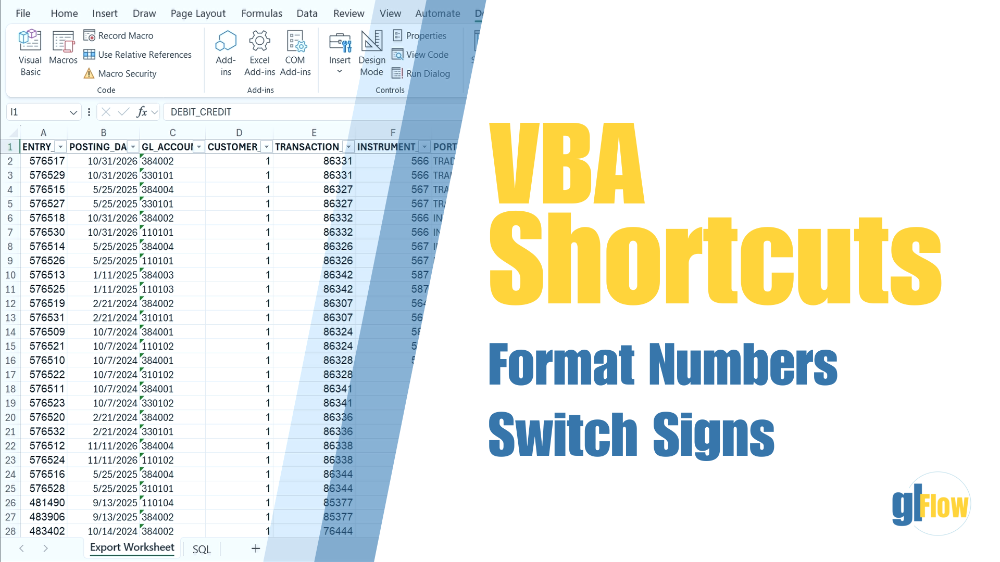
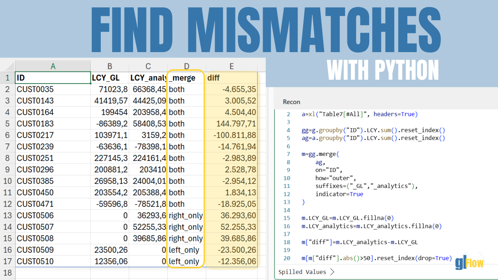

Excel VBA
VBA Shortcuts: Format Numbers and Switch Signs
Two practical macros that speed up repetitive formatting tasks in Excel.
Excel • VBA • Python • SQL • Automation
Learn practical Excel, VBA, Python and Oracle SQL techniques to simplify repetitive tasks and build efficient finance workflows.

Latest tutorials

Two practical macros that speed up repetitive formatting tasks in Excel.
Compare tables, identify missing records and reconcile data using pandas.
Popular topics
Faster, cleaner and more reliable workbook processes.
Reusable shortcuts and practical workflow automation.
Reconciliation, comparison and data analysis with pandas.
Queries designed around accounting and reporting needs.
Downloads
Download the workbooks and VBA modules directly from glflow.org.
Source tables and reconciliation example from the Python tutorial.
Toggle between Number and General formats.
Retrieve the current coupon for each instrument using the ROW_NUMBER() window function.
Switch the sign of visible numeric constant cells.
About glFlow
glFlow shares focused Excel, VBA, SQL, Python and automation tutorials designed around real accounting and finance workflows. The goal is simple: reduce manual work, improve control and make technical solutions easier to apply.